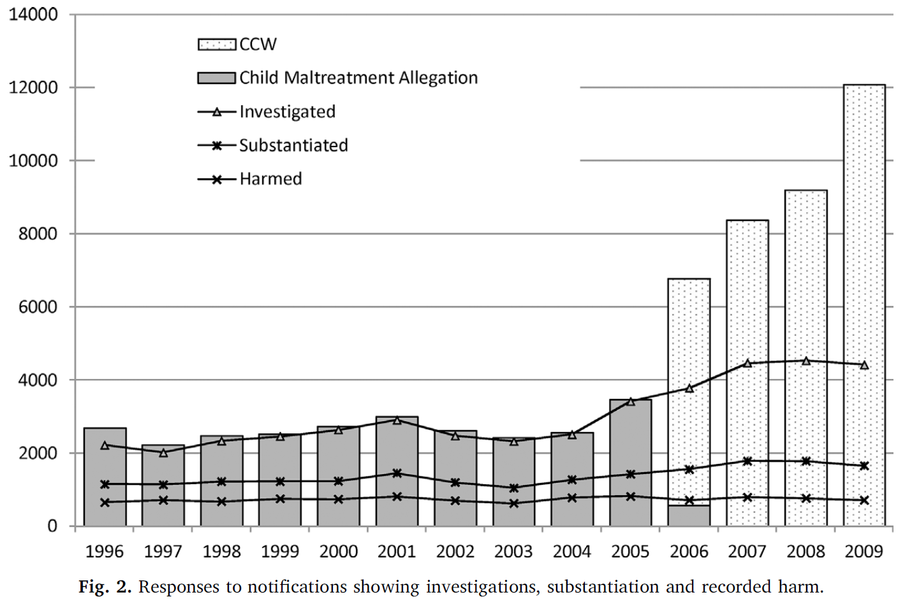
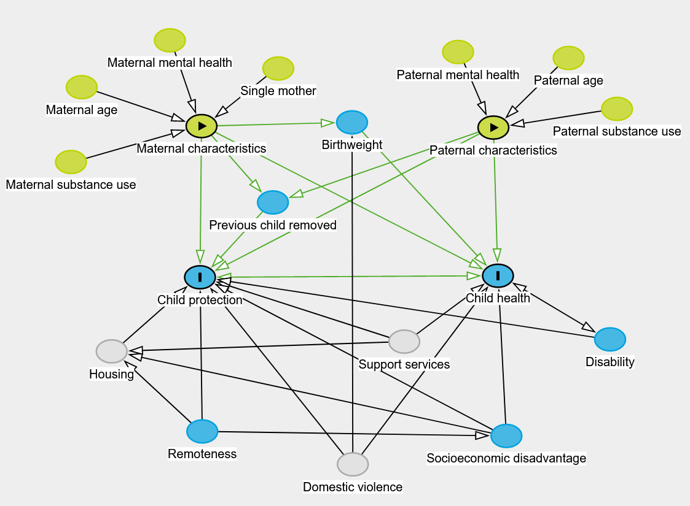

| Item | Due | Progress |
|---|---|---|
| Identify search topics | Apr 2020 | Complete |
| Perform literature search | May 2020 | Complete |
| Read literature | Dec 2020 | Complete |
| Draft child protection review | Jan 2021 | Complete |
| Draft child health review | Mar 2021 | Near completion |
| Finalise literature review | May 2021 | In progress |
The Health of Aboriginal Children in Western Australia and its Intersection with the Child Protection System
PhD Confirmation Report, May 2021
research
academia
phd
This is the report I prepared for my PhD confirmation on the 31st of May, 2021.
Abstract
Aboriginal and Torres Strait Islander children continue to be over-represented in out-of-home care and there is little published information on the health of these children before and after they enter care. Using a Western Australian data linkage for Indigenous children born between 2000 and 2013 and following up to age 10, I will examine contemporary rates and trends in child protection and provide a causal framework for factors that put children at risk of entering out-of-home care. I will also examine the health status of Indigenous children who go into care using hospital records and compare against the health of Indigenous children who never enter care.
Supervisors
Professor Sandra Eades, Curtin Medical School, Faculty of Health Sciences, Curtin University.
Dr Alison Gibberd, Centre for Epidemiology and Biostatistics, Melbourne School of Population and Global Health, The University of Melbourne.
Dr Bridgette McNamara, Centre for Epidemiology and Biostatistics, Melbourne School of Population and Global Health, The University of Melbourne.
Dr Koen Simons, Centre for Epidemiology and Biostatistics, Melbourne School of Population and Global Health, The University of Melbourne.
Funding
My PhD scholarship is funded through the Indigenous Child Removals WA (I-CaRe WA) Study’s funding, NHMRC Project grant (2019-2022), GNT1162968
People and Country
Acknowledgement of Country
I acknowledge the Wurundjeri Woi-wurrung, Wadawurrung, and Dja Dja Wurrung peoples who are the Traditional Owners of the lands that I live on and work from and I pay respect to their Elders past and present. I acknowledge their continuing connection to lands, waters, and communities and that sovereignty was never ceded. I also extend this respect to the communities across Western Australia who are affected by and contributed to this research project.
Engagement with Aboriginal People and Community
I will be seeking the supervision and feedback throughout my PhD from Aboriginal and Torres Strait Islander people. Specifically:
- My primary supervisor and the principal investigator, Professor Sandra Eades
- Chief and Associate Investigators on the broader research team of which my PhD is a part of
- Staff from Aboriginal Community-Controlled Health Organisations who sit on the study advisory group
- Members of the community and policy reference groups
- Western Australian Aboriginal Health Ethics Committee
My PhD is part of a larger research project that is based on a co-creation of research model, which is the collaborative generation of knowledge by academics working alongside the community. Information collected as part of the qualitative component of the study (interviews with Aboriginal carers, community members, and staff at Aboriginal Community-Controlled Health Organisations) will also be used to direct the aims of the research.
Research plan
My thesis has three broad research questions:
- What are the recent trends in child protection data for Aboriginal and Torres Strait Islander children in Western Australia and how does this vary across the state.
- How do all the factors that increase the risk of poor child health and entry into out-of-home care relate to each other in a causal framework?
- What is the general health profile of Aboriginal and Torres Strait Islander children who go into out-of-home care and how does it compare to children who do not?
To address these research aims my current proposed chapter structure is as follows:
- Literature review
- Methodology
- Descriptive analysis of trends in the child protection system
- Causal pathways to the child protection system
- Health profile of children going into care
- Exposed vs. unexposed comparison of health outcomes in children who ever enter out-of-home care vs. those who ever enter out-of-home care
Justification of research
Based on my review of the literature there are several aspects of Aboriginal and Torres Strait Islander child removals and health that need more consideration.
A more detailed analysis of child protection data
More up-to-date data is needed to evaluate the state of child removals in Western Australia and the outcomes of government policy over the last decade. The most current research has been based on data covering up to 2010, leaving out over a decade of child removals. The Australian Institute of Health and Welfare published more recent data in their report on child protection (Australian Institute of Health and Welfare (2020a)) however it is restricted to a fairly general overview of the state of child protection across Australia. The Family Matters Report 2019 (Lewis et al. 2019) examines child protection data in a little more detail, however this still is not to the level of detail explored in studies such as Bilson et al. (2017) or Jenkins et al. (2018). Examining trends in the data in greater detail can reveal impacts of changes to policy and practice at the departmental or regional level. Having this information available will help inform what policy changes were effective, which may have had unintended consequences, and develop new policy recommendations.
Another reason why a more detailed examination of the child protection data is needed is previous analyses have focused on risk factors, rather than taking a strengths-based approach and examining protective factors. The overall goal of the I-CaRe WA study is to identify factors that can help reduce the number of Aboriginal children going into out-of-home care, as well ways of supporting families who are at risk and children who are already in care.
The need to understand the health of children going into care
In the qualitative interviews conducted for the I-CaRe WA study, many carers raised the issue that the Department of Communities (the agency responsible for child protection in WA) does not pass on any information about the health of the children. This lack of information creates a barrier for the child and carer to accessing adequate primary healthcare and support services. This puts the children at risk of having health issues result in more severe illness, causing increased burden on the carers as well as the hospital services. Understanding what conditions are common in these children, and breaking it down by geographic region, can help inform healthcare services provided by local Aboriginal Community Controlled Health Organisations and other support agencies.
Building a health profile of the children in care is also relevant for policymakers for two reasons. Firstly, this can inform service planning and delivery. For example, if children are appearing in hospital data with conditions that should have been managed in a primary care setting this may indicate that the appropriate services are not available or accessible to the families who need them. This can then inform the provision of additional services or outreach programs to help families at risk and prevent their children from ending up in hospital. More outreach is certainly needed, as Aboriginal and Torres Strait Islander people are under-represented in service usage data for services designed to support and prevent entry into the out-of-home care system (Lewis et al. 2019). Secondly, the treatment and management of health conditions has a monetary cost associated with it. Quantifying the number and type of health conditions means the monetary cost of providing this healthcare can be estimated, relevant for budgeting and funding of services.
Identifying protective factors and strengths of Aboriginal culture and practices
In addition to understanding the health of Aboriginal and Torres Strait Islander children going into care, it would also be beneficial to identify the strengths of the communities and cultural practices which protect against ill-health and interactions with the child protection system.
Aboriginal culture and practices are important, and Aboriginal ways of being and doing are critical to the principle of self-determination. By identifying strengths of these communities, more localised support can be provided to encourage and enhance these practices.
The overall goal of my research is to contribute new knowledge and evidence that can be used to support Aboriginal and Torres Strait Islander communities at risk of child protection involvement and help reduce the rate of children going into care.
Background
Child protection in Australia
Australia has a history of removing Aboriginal and Torres Strait Islander children from their families since colonisation, with the Stolen Generations being a very recent reminder of racist colonial practices of assimilation. The history of colonisation and the impact of these practices resulted in intergenerational trauma which is still felt by Aboriginal and Torres Strait Islander people and contributes to many challenges they face today, including deficits in parenting skills due to the disruption of families and prevention of passing on of knowledge, and high levels of substance use and mental health issues (Wilson & Wilkie 1997).
While the policies underpinning the Stolen Generations came to an end in the late 1960s, Aboriginal and Torres Strait Islander children continue to be removed from their parents at an alarming rate, as evidenced by the over-representation of Aboriginal and Torres Strait Islander children in out-of-home care. In June 2019, the national rate of Aboriginal and Torres Strait Islander children in out-of-home care was 9.7 times higher than the rate for non-Indigenous children, with 1 in every 16.6 Aboriginal and Torres Strait Islander children in out-of-home care (Hunter et al. 2020). Western Australia was above the national average and the highest in the country at 16.7 times higher. In a recent Western Australian government report over 56% of children and young people in care were Aboriginal or Torres Strait Islander (Department of Communities 2020) despite only constituting around 6.4% of the child population (Commissioner for Children and Young People 2020). For Aboriginal and Torres Strait Islander children in Western Australia, placement with Indigenous carers is also below the national average at 46.9% in 2017-18 (SNAICC 2019a).
The tie to family, community, culture, and Country is a key part of Aboriginal and Torres Strait Islander children’s identity and growth and intrinsic to the concept of permanency (SNAICC 2016). This aspect of permanency is formalised in the Aboriginal and Torres Strait Islander Child Placement Principle (ATSICPP), which (from SNAICC (2013)) aims to:
- Recognise and protect the rights of Aboriginal and Torres Strait Islander children, family members and communities
- Increase the level of self-determination for Aboriginal and Torres Strait Islander people in child welfare matters
- Reduce the disproportionate representation of Aboriginal and Torres Strait Islander children in the child protection system.
This Principle has been adopted in jurisdictions around Australia, and, specifically in Western Australia, has been enshrined in law as part of the Child and Community Services Act 2004 (WA 2004). The ATSICPP also appears throughout policy documentation published by the Western Australian Department of Communities (hereafter referred to as ‘the Department’) over the last decade. The Department sees permanency as the most important outcome for children (Department of Communities 2017) and incorporates permanency planning into child protection cases from the beginning. Permanency, however, is defined differently by the Department, with the ATSICPP being one aspect of permanency planning. The difference in the Department’s understanding of permanency is that the critical aspect is the formation of a long-term attachment to a carer, which disregards Aboriginal and Torres Strait Islander perspectives and ways of experiencing permanency (SNAICC 2019b).
On paper, the Department’s operations are aimed at reducing the over-representation of Aboriginal and Torres Strait Islander children in care, with policy directives stating that more Aboriginal Community-Controlled Organisations will be engaged to provide services, Department staff will be trained to provide ‘culturally safe’ services, more services will be funded to support families at risk, provision of support is preferred over removal of a child, and in the case of removal, reunification is worked towards (Department of Communities 2017, 2016a, 2016b). In addition to these positive policies, the Department’s operations have been based on the Signs of Safety framework (Department of Communities 2011) since 2011, a framework which encourages real relationship building between families involved and various professionals, and the consideration of strengths of parents and opportunities for safety, rather than operating in a purely risk-averse way (Turnell & Edwards 1999).
The combination of the ATSICPP being embedded in the legal framework and the various policy documents from the last decade would suggest that a reduction would have been achieved. This is unfortunately not the case, with the rate and number of Aboriginal and Torres Strait Islander children in out-of-home care increasing yearly for at least the past decade.
Key definitions
Before exploring the research on child protection issues in Australia I will first define some key terminology used by the Department and in research more generally.
Maltreatment of a child is categorised into four broad categories, of which several can be present at the same time:
- Neglect - when a child does not receive adequate food or shelter, medical treatment, supervision, care or nurturance to such an extent that their development is damaged or they are injured (Department of Communities 2012a).
- Physical abuse - when a child is severely and/or persistently hurt or injured by an adult or a child’s caregiver. It may also be the result of putting a child at risk of being injured (Department of Communities 2012b).
- Sexual abuse - when a child is exposed to, or involved in, sexual activity that is inappropriate to the child’s age and developmental level (Department of Communities 2012c).
- Emotional abuse - when an adult harms a child’s development by repeatedly treating and speaking to a child in ways that damage the child’s ability to feel and express their feelings (Department of Communities 2012d).
In the child protection system in Western Australia there are four broad stages:
- Notification - where an individual raises concern for a child’s welfare to the Department. These individuals can be anyone, however they tend to be police officers, healthcare workers, and teachers, in part because these groups of professionals are subject to mandatory reporting of sexual abuse (Children and Community Services Amendment (Reporting Sexual Abuse of Children) Act 2008).
- Investigation - if a notification includes a concern of maltreatment, abandonment, death, or inadequate provision of care, then the department may choose to investigate.
- Substantiation - after case worker from the Department investigates the report, interviewing relevant parties, they decide whether the concern is substantiated. The three outcomes here are “unsubstantiated”, “substantiated - significant harm (actual)” where actual harm to a child has been substantiated, or “substantiated likelihood of significant harm (has or will occur)” where no harm was substantiated but the investigator believes there is a great risk of harm to the child. This is the stage at which the types of maltreatment are identified.
- Conclusion - depending on the evidence in the investigation, the conclusion can result in no action, the provision of support services to address issues of concern, or the removal of a child from their parents.
The latter two outcomes at the conclusion stage usually lead to a protection order being issued. These protection orders are either temporary (up to two years long) or permanent (until the age of 18). There are four kinds of protection order in the legal framework which governs child protection (WA 2004):
- Supervision - this temporary order leaves the child in the care of the parents, but the Department supervises the care of the child. This may include conditions that the parents must meet in order to satisfy the concerns of the Department.
- Time-limited - this temporary order assigns the Department parental responsibility of the child (which usually means removal from the parents).
- Until 18 - a permanent version of the time-limited order, where the Department is assigned parental responsibility until the child turns 18 or is adopted, or the order is revoked.
- Special guardianship - a permanent order where up to two individuals are given parental responsibility for a child until the age of 18. Aboriginal and Torres Strait Islander children must be placed according to the ATSICPP for this order.
The overall framework of the child protection system is represented in Figure 1.

Trends in child protection data
In a study of Aboriginal children born in Western Australia in 1990 and 1991 and followed up until their 18th birthday, Bilson et al. (2015) found an estimated 41.8% were reported to child protective services, compared to 11% of non-Aboriginal children. In fact, Aboriginal children were more likely to appear across all stages of the child protection system - they were 3.8 times more likely to be reported, 4.1 times more likely to be investigated, and 5.3 times more likely to have substantiated maltreatment. In the Northern Territory, Aboriginal and Torres Strait Islander children were similarly over-represented in rates of notification (4.6 times) and substantiation (3.7 times) (Guthridge et al. 2012).
Another trend in child protection data has been children entering out-of-home care at younger ages and remaining in care for longer periods. The proportion of children in Western Australia entering care for the first time under the age of one rose from 15.3% to 24.8% between 1996 and 2009 (Bilson et al. 2017). In New South Wales, a more recent study of all children who started school in 2009 or 2012 found by age 1, 5.4% had a notification and 0.5% had been placed in out-of-home care, increasing to 13.8% and 1.4% respectively by age 5. These percentages seem small but they still represent over 2,100 children in out-of-home care by the age of five. This trend of increasingly younger entry into out-of-home care is even stronger in South Australia. Segal et al. (2019) estimated the cumulative incidence rates for five different birth cohorts (the earliest of which was births between 1986-91 and the latest was 2010-17), showing an acceleration of the percentage of Aboriginal and Torres Strait Islander children in out-of-home care at younger ages. Spending longer time in out-of-home care is also naturally correlated with earlier entry into out-of-home care as the younger a child is when they enter the system, the more potential years they have to spend in it.
An interesting effect of policy change can be observed with the implementation of the Child and Community Services Act 2004 (WA 2004). There was a sharp rise in the number of notifications and investigations by the Department, however the rate of substantiation did not change (Bilson et al. 2017). This is illustrative of how a policy or operational change can have a great impact on the data being recorded but the reality of the situation is not changing. Figure 2 illustrates the changes in the data - note that the 2004 Act was not implemented until 2006, indicated by the change in shading of the bars representing notifications. A later amendment to the Act (Children and Community Services Amendment (Reporting Sexual Abuse of Children) Act 2008) also made it mandatory for certain professionals, e.g. police, teachers, to report concerns of sexual abuse, which also resulted in an increase in the number of notifications for sexual abuse.
 Source: Bilson et al. (2017)
Factors associated with child protection interaction
The rate of interactions and removals in the child protection system have been well documented. Several studies have examined which characteristics are related to increasing appearance in the data. Studies on this topic typically rely on administrative data linked with various sources of health information, using the data linkage to estimate the risk associated with particular characteristics. Data linkage can be a powerful way to access large amounts of data on a variety of different topics, however it has some drawbacks. One key issue is identifying Indigenous status. It has been documented that Indigenous people hesitate to identify in healthcare settings, such as hospitals, for fear of mistreatment and discrimination (Christensen et al. 2014). Methods have been developed to improve the quality of Indigenous identifiers, such as comparing the status across multiple different datasets including birth records and family relations. McNamara et al. (2020) demonstrated the use of Indigenous status across family members (i.e. child, parent, and grandparents) to derive a child’s Indigenous status was a more inclusive method than relying on Indigenous status of only the child across datasets. This relies on having multiple datasets available in a linkage, which means studies relying solely on the analysis of hospital records are very likely underestimating the number of Aboriginal and Torres Strait Islander people in the data.
In the research published on risk factors for entry into the child protection system, the following have consistently been identified to increase the risk of a child having substantiated maltreatment and entering out-of-home care:
- Maternal and paternal substance use (O’Donnell et al. 2010, 2015; Jenkins et al. 2018; Orr et al. 2019)
- Poor maternal or paternal mental health (O’Donnell et al. 2010, 2015; Jenkins et al. 2018)
- Teenage mother or father (Orr et al. 2019; O’Donnell et al. 2019)
- Maternal hospital admissions for assault (O’Donnell et al. 2010, 2015; Orr et al. 2019)
- Exposure to family domestic violence (Jenkins et al. 2018; Orr et al. 2019)
- Living in socioeconomically disadvantaged areas (O’Donnell et al. 2010; Orr et al. 2019; Segal et al. 2019)
Several congenital conditions have been associated with increased risk of appearing in child protection data. O’Donnell et al. (2010) reported hazard ratios for intellectual disability and cerebral palsy and other birth defects of 1.86 and 1.48 respectively. O’Donnell et al. (2009) also found that Aboriginal mothers were twice as likely to have a child born with neonatal withdrawal syndrome and identified poor maternal mental health and smoking during pregnancy as risk factors for being born with neonatal withdrawal syndrome - the same risk factors for having a child appear in child protection data.
These parental characteristics and health issues are only part of the picture though. There are common causes that underlie poor child and maternal health and appearing in child protection data - poverty, intergenerational trauma, systemic racism, lack of support or access to support services, poor housing and homelessness (Hunter et al. 2020).
Health of children
The health conditions identified previously have been those associated with increased risk of appearing in child protection data, but what does the overall health of these children going into care look like? This is an important question since carers taking on children need to ensure appropriate healthcare is provided, which means healthcare services need to be available and accessible. This information can also be used to inform early-intervention services to promote good development and wellbeing while children are young - a strategy which has been documented to be more cost effective than treating ill-health and other negative outcomes later in life (Alperstein & Dyer 2012). Providing support early on is not just about preventing ill-health either, good health has influences on every aspect of a child’s life, including education and social activities (Australian Institute of Health and Welfare 2020b).
Good health begins for a child during pregnancy and the first years of life. The health of the mother during pregnancy impacts birth outcomes, with behaviours like smoking and substance use (factors also associated with child protection involvement) contributing to poor outcomes like low birthweight, which is itself a risk factor for several health conditions in adulthood, such as diabetes (Australian Institute of Health and Welfare 2020b). It has also been found that mothers who experienced family domestic violence (again, another factor for child protection involvement) are twice as likely to give birth to a low birthweight baby (Brown et al. 2015). The provision and uptake of early-intervention support services can help reduce the likelihood of poor prospective health, however this will not change the health needs of Aboriginal and Torres Strait Islander children already in, and at risk of going into, out-of-home care.
The Australia’s Children report (Australian Institute of Health and Welfare 2020b) gives an overview of the general burden of disease among Aboriginal and Torres Strait Islander children. Asthma and mental health conditions are the leading causes of disease burden among Aboriginal and Torres Strait Islander children aged 0-14. For Aboriginal and Torres Strait Islander children under five, the leading chronic health conditions were infant and congenital conditions (such as complications of low birthweight and pre-term birth) while for children aged 5 to 14 the leading causes of health burden were conduct, anxiety, and depressive disorders, asthma, and dental caries. While mental health conditions are common amongst children generally, children in out-of-home care are at even greater risk of experiencing poor mental health (Jones 2017).
On a positive note however, Aboriginal and Torres Strait Islander children have high rates of immunisation at age two (Australian Institute of Health and Welfare 2020b). The Australia’s Children report acknowledges that data for children living in out-of-home care is limited, demonstrating that even the Australian Institute of Health and Welfare, a government organisation that has access to large and varied datasets, struggles to get information on the health of children in out-of-home care. This further highlights the need to make health information on children in out-of-home care available.
Few studies have been published on the health of Aboriginal and Torres Strait Islander children in out-of-home care, and the ones that do use highly-localised samples from service providers, limiting their generalisability. In a study of children attending KARI Aboriginal Resources Inc. clinics in south-western Sydney, half of the children had incomplete immunisation schedules (Raman, Reynolds & Khan 2011). This is an important contrast to what is reported in the Australia’s Children report, suggesting Aboriginal and Torres Strait Islander children at risk of entry into out-of-home care may be a subgroup of the larger Indigenous child population, who experience differential rates of health and healthcare. A follow up study consistently found hearing, vision, dental issues in children across several years (prevalences ranging from 30% to 50%), and several developmental deficits in the areas of speech and language and fine motor skills (Raman et al. 2017). Of the health conditions reported in Australia’s Children, asthma, visual impairment, and behavioural problems were common in the children in out-of-home care. Shmerling et al. (2020) conducted a similar analysis of children seen by the Victorian Aboriginal Health service. The same set of respiratory, hearing, visual, and dental issues were found as those in Raman et al. (2017), with prevalences ranging from 30% to 50% in children aged 0 to 13. Mental health and behavioural difficulties as well as delays to speech development were similarly prevalent. As far as I have been able to determine, no similar studies are published on Aboriginal and Torres Strait Islander children in out-of-home care in Western Australia. It is important to capture this information as the geography and climate of Western Australia is very different to Victoria and New South Wales, with a far greater proportion of Aboriginal and Torres Strait Islander people living in remote and very remote locations (Australian Institute of Health and Welfare 2019a) - a characteristic associated with greater experience of poor health (Australian Institute of Health and Welfare 2020b; Department of Health Western Australia 2021).
Potentially preventable hospitalisations
One source of administrative data that can provide a glimpse into the health of Aboriginal and Torres Strait Islander children in care is hospital and emergency department data. By linking these data with child protection data we can examine what health conditions children are presenting to hospital with (similar to O’Donnell et al. (2015)). While this methodology is powerful, it does not provide information on primary care visits, so we may be less likely to see health conditions that can be managed in a primary care setting. However, this presents an opportunity to consider the health service utilisation and availability by examining potentially preventable hospitalisations.
Potentially preventable hospitalisations (PPHs) are “defined as hospital admissions that could have potentially been prevented through the provision of appropriate individualised preventative health interventions and early disease management” (Australian Institute of Health and Welfare 2019b). These hospitalisations can be used as a metric to understand how effective and accessible healthcare services are in a community. If there is a high rate of PPHs in a community it suggests that there is a lack of accessible healthcare services, or those services that are available are not sufficiently addressing the health needs of the community. It should be noted however that PPHs will occur more frequently in areas where there are higher rates of disease, so higher rates do not necessarily imply that the primary care system is less effective.
Potentially preventable hospitalisations are generally categorised into three groups:
- Vaccine-preventable conditions - further categorised into ‘Influenza and pneumonia’ and ‘Other vaccine-preventable’. The majority of these admissions tend to be influenza and pneumonia, and Hepatitis C accounts for the majority of admissions in the ‘other’ category (Australian Institute of Health and Welfare 2019b).
- Acute conditions - which are quick onset conditions that may not have needed hospitalisation if adequate and timely primary care was provided.
- Chronic conditions - hospitalisation for these conditions may have been avoidable through management in the community or lifestyle changes.
Even though there are many conditions that fall under these different categories it is important to note that hospitalisation for such conditions may not have actually been avoidable.
Of the few studies published that examine rates of PPHs in Aboriginal and Torres Strait Islander children, they have all found consistently higher rates of admission compared to non-Indigenous children, ranging from:
- 1.7 in children aged 1 to 4 and 11 in children aged 28 days to 1 year (Stamp, Duckett & Fisher 1998), based on an analysis of NSW/NT/QLD/SA/WA data using admissions per 1,000 population
- 4 in children aged 0 to 14 (Li et al. 2009), based on an analysis of admissions per 100,000 population in the NT between 1998 and 2006
- 1.7 in children aged 0 to 13, based on an analysis of PPHs per 1,000 person-years observed from 2000 to 2012 in NSW (Falster et al. 2016)
These findings are consistent with the Australian Institute of Health and Welfare (2019b), which reports Indigenous Australians experience PPHs at a rate three times greater than non-Indigenous Australians - a finding that is consistent irrespective of remoteness area (however the rate does increase with increasing remoteness).
In a study of Aboriginal and Torres Strait Islander children from the Australian Capital Territory aged 0 to 5, nearly a quarter of PPHs were due to respiratory disease, with injury and infectious disease also in the top 5 (Guthrie 2012). The health categories being found for PPHs is also consistent with nationally published data which finds chronic obstructive pulmonary disorder is the leading cause of PPHs for Aboriginal and Torres Strait Islander peoples and is experienced at a rate 5.4 times greater than that for non-Indigenous people (Australian Institute of Health and Welfare 2020c). The other common conditions causing PPHs reported were diabetes complications, rheumatic heart disease, and in children, ear, nose, and throat infections. These data are predominantly for Aboriginal and Torres Strait Islander people of all ages, using age-standardised rates. Very few studies focus specifically on, or report separately, PPHs in Aboriginal and Torres Strait Islander children. One of the few studies which does, a study in New South Wales, Aboriginal and Torres Strait Islander children were admitted more frequently for every condition, with respiratory and infectious disease conditions among the most common (Falster et al. 2016).
Conclusion
To summarise, Aboriginal and Torres Strait Islander children experience similar types of health conditions in their disease burden, but the rate at which it is experienced is disproportionately higher than non-Indigenous children. These children are also over-represented in out-of-home care and the child protection system more generally. There are a variety of factors causing this over-representation, such as poverty, systemic racism, and intergenerational trauma, which ultimately is the result of colonisation and the continuing lack of support for Aboriginal and Torres Strait Islander communities. Research has examined the health of Aboriginal and Torres Strait Islander children generally, but there is little published on the general health of children who enter out-of-home care. Additionally, a more up-to-date analysis is needed for Western Australian child protection data to examine the recent trends in greater detail.
PhD Overview
Research aims
As mentioned previously, my thesis has three broad research questions:
- What are the recent trends in child protection data for Aboriginal and Torres Strait Islander children in Western Australia and how does this vary across the state.
- How do all the factors that increase the risk of poor child health and entry into out-of-home care relate to each other in a causal framework?
- What is the general health profile of Aboriginal and Torres Strait Islander children who go into out-of-home care and how does it compare to children who do not?
Methods
The data that will be used to inform the analyses of my thesis comes from a data linkage performed by the Western Australian Data Linkage Branch. The cohort consists of approximately 33,000 Aboriginal and Torres Strait Islander children born in Western Australia and their siblings, parents, and grandparents. In terms of the data linkage methodology, the central linking unit (i.e. the individual to which the other family members are linked to) are Aboriginal and Torres Strait Islander children born in Western Australia between 2000 and 2013. Siblings of these children born outside of those years, as well as parents and grandparents, are included in the linkage. There is maternal information for all children, however paternal information is missing for some children. Grandparental information is missing in some cases too, such as where no father is recorded on a birth certificate, or the mother was born interstate so her birth record is not available to link. The full list of data sources in the data linkage, along with the range of years for each data source, are listed below:
- Child Protection and Family Support Data (1979-2019)
- Midwives Notification System (1980-2019)
- Birth registrations (1945-2019)
- Hospital Morbidity Database Collection (1970-2019)
- Emergency Department Database Collection (2002-2019)
- WA Notifications of Notifiable Infectious Diseases (1964-2019)
- WA Register of Developmental Abnormalities - Birth defects (1980-2019)
- WA Register of Developmental Abnormalities - Cerebral Palsy (1980-2019)
- Intellectual Disability Exploring Answers
- Death registrations (1969-2019)
- WA Infant, Child, Youth Mortality database
- Mental Health Information System (1966-2019)
- Mental Health National Outcomes and Casemix Collection
- Drug and Alcohol Office (1985-2005)
Different statistical methods and datasets will used to address the research question for each chapter.
Thesis plan
Chapter 1 - Literature review
The aim of this chapter is to provide a background on Aboriginal and Torres Strait Islander child protection and child health in Australia.
For this chapter I conducted a non-systematic review of the literature pertaining to data linkage, child protection in Australia, and Aboriginal and Torres Strait Islander child health. The results of my searches include government reports and policy documentation, technical documentation, and research articles and reports. I have synthesised the information presented in these different sources into a narrative review which explores the history and trends in the child protection system, nationally and in Western Australia, as well as the health of Aboriginal and Torres Strait Islander children and families in relation to child protection.
Tasks for this chapter:
Chapter 2 - Methodology
In this chapter I will be explaining the data sources and describing the cohort and data linkage methodology. I will be including any pertinent information relating to the data, including issues of data quality and the operational and political history and context of the data. The cohort will be described on a variety of characteristics, including:
- Number of children
- Number of child years observed in the child protection data
- Number of siblings (half- and full-), parents (mother and father) and number of grandparents (maternal and paternal)
- Average and range of duration of follow-up
- Average and range of number of interactions with the child protection system
- Average and range of number of admissions in the hospital and emergency data
- Rate of missing data and censoring
I will also cover some statistical methodologies I have planned to use in subsequent chapters which involve data analysis and statistical modelling.
Tasks for this chapter:
| Item | Due | Progress |
|---|---|---|
| Draft description of the data and data linkage | Jun 2021 | Not started |
| Draft of proposed analysis methods | Jun 2021 | Not started |
| Coding of the cohort | July 2021 | In progress |
| Descriptives of the cohort | July 2021 | Not started |
| Finalise chapter | Aug 2021 | Not started |
Chapter 3 - Descriptive analysis of trends in the child protection system
Aim: Quantify contemporary trends in WA child protection data, examining the rates in different areas of the child protection system such as the different stages (notification through to conclusion) or types of maltreatment.
This chapter will be a descriptive analysis, I will not be fitting any statistical models to the data. I will examine the trends in the four stages (notification, investigation, substantiation, placement in out-of-home care) and trends in the different maltreatment categories (neglect, physical abuse, emotional abuse, sexual abuse). The methods used for this chapter will mainly be data visualisation and tabulation. The results will be presented in terms of rates of interactions per 1,000 children, and broken down by key characteristics like age at interaction or child sex.
I plan to submit this paper for publication by December 2021. The current authorship team includes my four supervisors (Sandra Eades, Alison Gibberd, Bridgette McNamara, Koen Simons) as well as Dan MacAulay (ECU) and Kathleen Falster (UNSW) from the study advisory group.
Tasks for this chapter:
| Item | Due | Progress |
|---|---|---|
| Organise authorship team | Jun 2021 | Complete |
| Draft aims of paper | Jun 2021 | In progress |
| Analyse the data | Oct 2021 | Not started |
| Write up the paper | Nov 2021 | In progress |
| Submit the paper | Dec 2021 | Not started |
Chapter 4 - Causal pathways to the child protection system
Aim: Use directed acyclic graphs (DAGs) to synthesise the literature on child protection and health into a framework which attempts to capture the complexity of the variables involved in both child protection and child health.
This chapter does not require the use of any data, the focus is to produce a theoretical framework which can guide my future analyses. I will be drawing heavily on the published research covered in the literature review to build a DAG. By building this framework I also hope to improve understanding of the complex inter-relatedness and causality of the different factors, going beyond simple associations.
As I have been reading the literature on Aboriginal and Torres Strait Islander health and child protection issues I have been building a mental map of how I think different variables are related to each other. My current thoughts are captured in Figure 3.

Tasks for this chapter:
| Item | Due | Progress |
|---|---|---|
| Draft aims of the chapter | Dec 2021 | Not started |
| Build causal framework | Jan 2022 | In progress |
| Write up chapter | Feb 2022 | Not started |
| Seek feedback and make edits | Mar 2022 | Not started |
Chapter 5 - Health profile of children going into care
Aim: Describe the general health of children prior to entering out-of-home care, examining common conditions and their trends in time and geography and variation by age.
In this chapter I plan to build a general health profile of the children who go into care in an effort to understand the health burden placed on carers.
The analysis will be descriptive, drawing on data visualisation and summaries to examine which conditions are appearing in the health data prior to entry into out-of-home care. This chapter will also explore the health service utilisation by comparing potentially preventable hospitalisations before and after being placed in care. One hypothesis is that parents whose children end up in out-of-home care may have poor access to primary healthcare and support services, so conditions which could have been treated or managed by primary care and other support services will be more likely to appear in the hospital and emergency admissions data. Once a child is placed into out-of-home care the carer may have better access to primary care services, so will be less likely to see potentially preventable hospitalisations for the child in the admissions data after placement into out-of-home care.
Tasks for this chapter:
| Item | Due | Progress |
|---|---|---|
| Organise authorship team | Apr 2022 | Not started |
| Draft aims of the paper | Apr 2022 | Not started |
| Analyse data | May 2022 | Not started |
| Write up paper | Jul 2022 | Not started |
| Submit paper | Aug 2022 | Not started |
Chapter 6 - Exposed vs. unexposed comparison of health outcomes
Aim: Compare the health outcomes and health service utilisation for children depending on their level of interaction with the child protection system.
Using a retrospective cohort design I will construct different cohorts to perform these comparisons. The exposed and unexposed groups will be children who are placed in out-of-home care and children who are never placed in out-of-home care, respectively. Depending on the further consultation with the study advisory group and the community and policy reference groups the analysis can be extended to compare children who ever appear in the child protection data (as opposed to only those who go into out-of-home care) with those who never do. Survival analysis methods may be used to estimate hazard ratios for the two cohorts.
Tasks for this chapter:
| Item | Due | Progress |
|---|---|---|
| Organise authorship team | Sep 2022 | Not started |
| Draft aims of the paper | Sep 2022 | Not started |
| Analyse data | Oct 2022 | Not started |
| Write up paper | Dec 2022 | Not started |
| Submit paper | Jan 2023 | Not started |
Progress to date
My progress to date includes:
- First draft of literature review of child protection in Australia
- Significant progress towards first draft of Aboriginal and Torres Strait Islander child health in Australia
- Presented thesis ideas to the study advisory group, policy reference group, and community reference group
- Set the aims and put the team together for the first major paper (Chapter 4)
- Received the data and begun coding the cohort
- Planning to attend the SNAICC2021 conference
- Enrolment in ‘Indigenous Health & History Insights’ to begin in Semester 2, 2021.
Presentations during my probationary candidature:
- Introduction to REDCap for research and systematic review data extraction
- Presentation of my proposed thesis to the International and Immigrant Health Group at the Peter Doherty Institute
- Presentation of my proposed thesis to the LifeCourse Data Linkage Interest Group
Conferences, workshops, seminars:
- Research Integrity Online Training
- Cochrane Review Online Training
- International Population Data Linkage Network Conference 2020
- Methods and Approaches for Optimising the Use of Linked Data in Indigenous Health Research (IPDLN2020 workshop)
- WA Data Linkage Branch Researcher Training Workshop (Western Australian Department of Health)
- How to peer review a journal article (Dallas English)
- Version control and collaboration with Git (Australasian Epidemiological Association)
- Introduction to RMarkdown (Research Computing Services, Unimelb)
- Data visualisation in R (Statistical Society of Australia)
- Data wrangling in R (Statistical Society of Australia)
- Semiparametric regression in R (Statistical Society of Australia)
Timeline
| Item | Due | Progress |
|---|---|---|
| Confirmation report | May 2021 | Complete |
| Confirmation presentation | May 2021 | Near completion |
| Ch.1 - Literature review | Jun 2021 | Near completion |
| Ch.2 - Methodology | July 2021 | Not started |
| Ch.3 - Descriptive analysis of trends in the child protection system | Dec 2021 | In progress |
| Ch.4 - Causal pathways to the child protection system | May 2022 | In progress |
| Ch.5 - Health profile of children going into care | Oct 2022 | Not started |
| Ch.6 - Case-control comparison of health outcomes | Feb 2023 | Not started |
| Submission | May 2023 | Not started |
Bibliography
Alperstein, G & Dyer, CS 2012, “The development and implementation of a strategic framework to improve aboriginal child development and wellbeing in far west NSW: A collaborative approach,” New South Wales public health bulletin, vol. 23, no. 4, pp. 73–76.
Australian Institute of Health and Welfare 2019b, National Healthcare Agreement: PI 18—Selected potentially preventable hospitalisations, AIHW, Canberra.
Australian Institute of Health and Welfare 2019a, Profile of Indigenous Australians, AIHW, Canberra, accessed May 23, 2021, from <https://www.aihw.gov.au/reports/australias-welfare/profile-of-indigenous-australians>.
Australian Institute of Health and Welfare 2020a, Child protection Australia 2018-19, AIHW, Canberra.
Australian Institute of Health and Welfare 2020c, Disparities in potentially preventable hospitalisations across Australia, 2012–13 to 2017–18, AIHW, Canberra.
Australian Institute of Health and Welfare 2020b, Australia’s children. Cat. no. CWS 69., AIHW, Canberra.
Bilson, A, Cant, RL, Harries, M & Thorpe, DH 2015, “A Longitudinal Study of Children Reported to the Child Protection Department in Western Australia,” The British Journal of Social Work, vol. 45, no. 3, pp. 771–791, accessed from <https://doi.org/10.1093/bjsw/bct164>.
Bilson, A, Cant, RL, Harries, M & Thorpe, DH 2017, “Accounting for the increase of children in care in western Australia: What can a client information system tell us?” Child Abuse & Neglect, vol. 72, pp. 291–300, accessed from <http://www.sciencedirect.com/science/article/pii/S0145213417302910>.
Brown, S, Gartland, D, Woolhouse, H & Giallo, R 2015, “Maternal health study policy brief no. 2: Health consequences of family violence,” Murdoch Children’s Research Insitute, Melbourne, accessed May 22, 2021, from <https://static1.squarespace.com/static/596d8907b3db2b5b22158a4e/t/5d070be1b81d960001e01a57/1560742894896/MHS+Policy+brief+No+2.pdf>.
Children and Community Services Amendment (Reporting Sexual Abuse of Children) Act 2008, accessed from <https://www.legislation.wa.gov.au/legislation/statutes.nsf/main_mrtitle_3572_homepage.html>.
Christensen, D, Davis, G, Draper, G, Mitrou, F, McKeown, S, Lawrence, D, McAullay, D, Pearson, G, Rikkers, W & Zubrick, SR 2014, “Evidence for the use of an algorithm in resolving inconsistent and missing indigenous status in administrative data collections,” Australian Journal of Social Issues, vol. 49, no. 4, pp. 423–443, accessed from <https://onlinelibrary.wiley.com/doi/abs/10.1002/j.1839-4655.2014.tb00322.x>.
Commissioner for Children and Young People 2020, “Profile of children and young people in WA,” accessed April 20, 2021, from <https://www.ccyp.wa.gov.au/media/2675/profile-of-children-and-young-people-in-wa-dec-2017.pdf>.
Department of Communities 2011, “The Signs of Safety Child Protection Practice Framework,” accessed October 27, 2020, from <https://www.dcp.wa.gov.au/Resources/Documents/Policies and Frameworks/SignsOfSafetyFramework2011.pdf>.
Department of Communities 2012d, “Emotional Abuse,” accessed January 20, 2021, from <http://dcp.wa.gov.au/ChildProtection/ChildAbuseAndNeglect/Pages/EmotionalAbuse.aspx>.
Department of Communities 2012a, “Neglect Abuse,” accessed January 20, 2021, from <http://dcp.wa.gov.au/ChildProtection/ChildAbuseAndNeglect/Pages/Childneglect.aspx>.
Department of Communities 2012c, “Sexual Abuse,” accessed January 20, 2021, from <http://dcp.wa.gov.au/ChildProtection/ChildAbuseAndNeglect/Pages/Sexualabuse.aspx>.
Department of Communities 2012b, “Physical Abuse,” accessed January 20, 2021, from <http://dcp.wa.gov.au/ChildProtection/ChildAbuseAndNeglect/Pages/Physicalabuse.aspx>.
Department of Communities 2016b, “Aboriginal Services and Practice Framework 2016-2018,” accessed October 27, 2020, from <https://www.dcp.wa.gov.au/Resources/Documents/ABORIGINAL SERVICES AND PRACTICE FRAMEWORK.pdf>.
Department of Communities 2016a, “Building a Better Future: Out-of-Home Care Reform in Western Australia,” accessed February 24, 2021, from <https://www.communities.wa.gov.au/media/1750/oohc-building-a-better-future.pdf>.
Department of Communities 2017, “Better Care, Better Services,” accessed October 27, 2020, from <https://www.dcp.wa.gov.au/ChildrenInCare/Pages/Better care better services 2017 November.pdf>.
Department of Communities 2020, “Child protection - activity performance information 2019-2020,” accessed May 21, 2021, from <https://www.communities.wa.gov.au/media/2858/child-protection-activity-performance-information-2019-20.pdf>.
Department of Health Western Australia 2021, Western Australian Burden of Disease Study 2015 - Summary Report for Health Regions 2021, ABS, Perth, accessed May 5, 2021, from <https://ww2.health.wa.gov.au/-/media/Corp/Documents/Reports-and-publications/WA-Burden-of-Disease-Study-2015-Summary-report/WA-Burden-of-Disease-Health-Region-report.pdf>.
Falster, K, Banks, E, Lujic, S, Falster, M, Lynch, J, Zwi, K, Eades, S, Leyland, AH & Jorm, L 2016, “Inequalities in pediatric avoidable hospitalizations between aboriginal and non-aboriginal children in australia: A population data linkage study,” BMC pediatrics, vol. 16, no. 1, pp. 1–12.
Guthridge, SL, Ryan, P, Condon, JR, Bromfield, LM, Moss, JR & Lynch, JW 2012, “Trends in reports of child maltreatment in the Northern Territory, 1999–2010,” Medical Journal of Australia, vol. 197, no. 11-12, pp. 637–641, accessed from <https://onlinelibrary.wiley.com/doi/abs/10.5694/mja12.10133>.
Guthrie, J 2012, Australian Aboriginal Studies (Canberra), no. 1, pp. 92–97, accessed from <https://search.informit.org/doi/10.3316/informit.407306360938004>.
Hunter, S-A, Burton, J, Blacklaws, G, Soltysik, A, Mastroianni, A, Young, J, Jones, M, Jayakody, N, Bhathal, A, Krakouer, J & others 2020, “The family matters report 2020,”
Jenkins, BQ, Tilbury, C, Hayes, H & Mazerolle, P 2018, “Factors associated with child protection recurrence in Australia,” Child Abuse & Neglect, vol. 81, pp. 181–191, accessed from <http://www.sciencedirect.com/science/article/pii/S0145213418301984>.
Jones, PD 2017, “Primum non nocere: Rethinking our policies on out-of-home care in Australia,” The Medical Journal of Australia, vol. 206, no. 10, pp. 421–422.
Lewis, N, Weston, R, Burton, J, Young, J, Jayakody, N, Mastroianni, A, Tan, WW, Parolini, A, Shlonsky, A & Tilbury, C 2019, “The family matters report 2019,”
Li, SQ, Gray, NJ, Guthridge, SL & Pircher, SL 2009, “Avoidable hospitalisation in aboriginal and non-aboriginal people in the northern territory,” Medical journal of Australia, vol. 190, no. 10, pp. 532–536.
McNamara, BJ, Jones, J, Shepherd, CC, Gubhaju, L, Joshy, G, McAullay, D, Preen, DB, Jorm, L & Eades, SJ 2020, “Identifying young aboriginal and torres strait islander children in linked administrative data: A comparison of methods,” International journal of population data science, vol. 5, no. 1.
O’Donnell, M, Maclean, M, Sims, S, Morgan, V, Leonard, H & Stanley, F 2015, “Maternal mental health and risk of child protection involvement: mental health diagnoses associated with increased risk,” Journal of Epidemiology and Community Health, vol. 69, no. 12, pp. 1175 LP–1183, accessed from <http://jech.bmj.com/content/69/12/1175.abstract>.
O’Donnell, M, Nassar, N, Leonard, H, Hagan, R, Mathews, R, Patterson, Y & Stanley, F 2009, “Increasing prevalence of neonatal withdrawal syndrome: population study of maternal factors and child protection involvement.” Pediatrics, vol. 123, no. 4, pp. e614–21.
O’Donnell, M, Nassar, N, Leonard, H, Jacoby, P, Mathews, R, Patterson, Y & Stanley, F 2010, “Characteristics of non-Aboriginal and Aboriginal children and families with substantiated child maltreatment: a population-based study.” International journal of epidemiology, vol. 39, no. 3, pp. 921–928.
O’Donnell, M, Taplin, S, Marriott, R, Lima, F & Stanley, F 2019, “Infant removals: The need to address the over-representation of Aboriginal infants and community concerns of another ’stolen generation’,” Child Abuse & Neglect, vol. 90, pp. 88–98, accessed from <http://www.sciencedirect.com/science/article/pii/S0145213419300377>.
Orr, C, Fisher, C, Sims, S, Preen, D, Glauert, R & O’Donnell, M 2019, “Hospitalisations for maternal assault are associated with increased risk of child protection involvement,” Child Abuse & Neglect, vol. 95, p. 104014, accessed from <http://www.sciencedirect.com/science/article/pii/S0145213419301759>.
Raman, S, Reynolds, S & Khan, R 2011, “Addressing the well-being of aboriginal children in out-of-home care: Are we there yet?” Journal of Paediatrics and Child Health, vol. 47, no. 11, pp. 806–811, accessed from <https://onlinelibrary.wiley.com/doi/abs/10.1111/j.1440-1754.2011.02030.x>.
Raman, S, Ruston, S, Irwin, S, Tran, P, Hotton, P & Thorne, S 2017, “Taking culture seriously: Can we improve the developmental health and well-being of australian aboriginal children in out-of-home care?” Child: Care, Health and Development, vol. 43, no. 6, pp. 899–905, accessed from <https://onlinelibrary.wiley.com/doi/abs/10.1111/cch.12488>.
Segal, L, Nguyen, H, Mansor, M, Gnanamanickam, E, Doidge, J, Preen, D, Brown, D, Pearson, O & Armfield, J 2019, “Lifetime risk of child protection system involvement in South Australia for Aboriginal and non-Aboriginal children, 1986–2017 using linked administrative data,” Child Abuse & Neglect, vol. 97, p. 104145, accessed from <http://www.sciencedirect.com/science/article/pii/S0145213419303229>.
Shmerling, E, Creati, M, Belfrage, M & Hedges, S 2020, “The health needs of aboriginal and torres strait islander children in out-of-home care,” Journal of Paediatrics and Child Health, vol. 56, no. 3, pp. 384–388, accessed from <https://onlinelibrary.wiley.com/doi/abs/10.1111/jpc.14624>.
SNAICC 2013, “Aboriginal and Torres Strait Islander Child Placement Principle: Aims and Core Elements,” accessed May 21, 2021, from <https://www.snaicc.org.au/wp-content/uploads/2015/12/03167.pdf>.
SNAICC 2016, “Achieving stability for Aboriginal and Torres Strait Islander children in out-of-home care,” accessed May 21, 2021, from <https://www.snaicc.org.au/wp-content/uploads/2016/07/SNAICC-Achieving_stability-1.pdf>.
SNAICC 2019a, “Reviewing Implementation of the Aboriginal and Torres Strait Islander Child Placement Principle Western Australia 2019,” accessed May 21, 2021, from <https://www.snaicc.org.au/wp-content/uploads/2020/01/ATSICPP-compliance-review-2019_WA.pdf>.
SNAICC 2019b, “The Aboriginal and Torres Strait Islander Child Placement Principle: A Guide to Support Implementation,” accessed May 21, 2021, from <https://www.snaicc.org.au/wp-content/uploads/2019/06/928_SNAICC-ATSICPP-resource-June2019.pdf>.
Stamp, K, Duckett, S & Fisher, D 1998, “Hospital use for potentially preventable conditions in aboriginal and torres strait islander and other australian populations,” Australian and New Zealand Journal of Public Health, vol. 22, no. 6, pp. 673–678.
Turnell, A & Edwards, S 1999, “Signs of safety,” A solution oriented approach to child protection casework.
WA 2004, “Children and Community Services Act 2004,” accessed from <https://www.legislation.wa.gov.au/legislation/statutes.nsf/main_mrtitle_132_homepage.html>.
Wilson, RD & Wilkie, M 1997, Bringing them home: Report of the national inquiry into the separation of Aboriginal and Torres Strait Islander children from their families, Sydney, Australia: Human Rights; Equal Opportunity Commission.